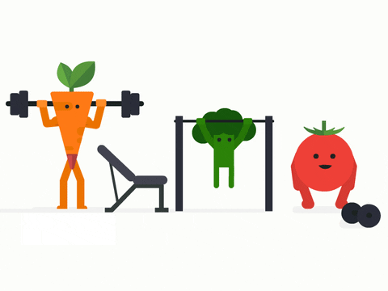

Dieting is a great way to cut calories and aid in weight loss. However for the majority of people it is not enough by itself. Exercise really helps to burn more calories but also has huge advantages to your over-all health and mindset. Exercise helps to tone and shape all that loose skin that will result from loss of fatty tissue. And did you know that more muscle also burns more calories doing nothing than having fat instead of muscle?
Sometimes a person will get a burst of enthusiasm and suddenly decide they are going to lose weight! They jump out of bed, begin some radical overhauling of the kitchen cupboards, stocking up on diet milkshakes or eggs and cheese
(aka The Atkins Diet) and then throw themselves into the gym for an hour five times that week! The result? Hunger from the sudden change in eating patterns combined with a sudden increase in burning calories at the gym. And worse, aches pains and injuries! When driving your car up a steep hill, do you think you can put it in top gear and power your way up the hill at full throttle? Or do you have to gently begin in a lower gear, increasing power as you increase momentum? Likewise you
should not expect your body to go from almost zero exercise to full out capability within a week. The key is to start out slow and steady! Your heart, lungs, bones and muscles all need time to adjust, heal and strengthen to your new regime!
There is no need for expensive equipment or gym memberships! We have the tools right here, on our own bodies! Walking is the best exercise you can do! It is free! And the fresh air will do your mind a whole world of good! But to be classed as exercise you need to walk at a brisk
pace. You should be able to hold a conversation but not be able to sing a tune! This pace will raise your heart rate which is the aim to get your blood pumping and calories burning! Try walking for 30 mins 3 times a week. gradually increase to 30 mins every day. You will notice a difference!
Your lungs and heart will get stronger. Your waist, thighs and legs will begin to shrink and tone! As walking is a non-impact exercise it is the least likely to cause any injuries! Walking regulary also has links to a decrease in depression. And is something the whole family can do too!
Once you have built up some stamina with walking I highly recommend the Couch to 5k program. You can read more about it here.Download the app to your mobile phone and have a trainer gently guide you from walking to being able to run for 30 mins! The 5k isn't actually important. The program is not about speed or distance. The benefits of running are very impressive and like walking is another free exercise! The Couch to 5K gave me a love for exercise and hopefully it will work for you too! Of course if you prefer the gym to do walking or running that is of course up to your own preference! From walking to running there are many many other forms of exercise to choose from! The key, whatever you choose, is to just keep on moving!!
I want to put a mention in here on aerobics. Aerobics is a very good overall body stretching, conditioning and strengthening method of exercise. It may not feel as calorie-burning efficient as more intensive work outs (although there are different levels of aerobics! They can certainly make you sweat!) But the exercises are great for preparing your body for the different types of exercise you may do. Strengthening the core can save you From many aches and pains or injuries later down the line! Also the length of aerobics is very easy to adjust or fit in with your lifestyle and routines! I like to do 15 mins of aerobic exercise every weekday morning before work! Its short enough to fit into my morning whilst long enough to wake my body up! My favourite video from youtube is from this lady Emi Wong. When I was 5 stone heavier I certainly could not jump so I wanted a non-jumping workout. Some of the exercises I found a little trickly but as I lost weight they have gotten easier! Plus after you have followed the routine from this, and other, videos you will know the exercises off by heart and will no longer need to watch them to them. Just set yourself a timer and go!
Click on the links below for some tips on different exercises!